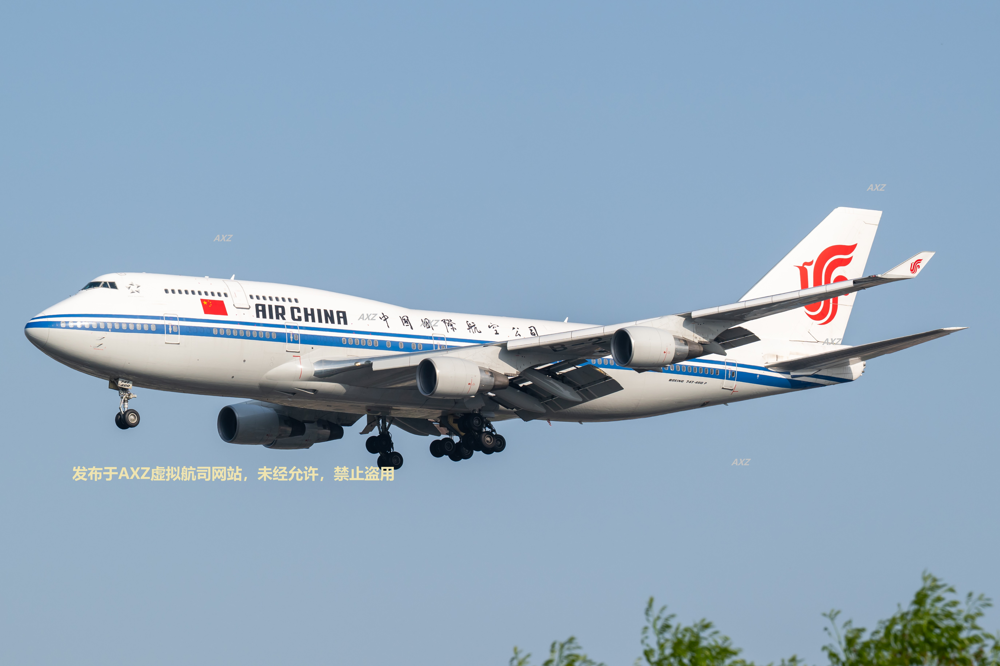

旧金山国际机场 ↔ 萨利纳斯机场
上海浦东国际机场 ↔ 南京禄口国际机场
👆 点击机场代码可查看航线示意图
2026年4月18日下午，上海虹桥机场(ZSSS)惊现国航747(B-2472),这震撼的一幕正好被相机镜头记录下！

小泽航空（AXZ）成立于2026年，主运营基地为旧金山国际机场（KSFO）。公司初期仅运营一条精品往返航线：KSFO ↔ KSNS，最初以 B-737-800 为唯一运营机型，后续逐步引入 A321 客运机型与 737-800BCF 货机，形成精简高效的客货并举机队，是专注于飞行的特色航司。后期将部分主力转战中国市场，并开通了ZSPD ↔ ZSNJ的往返航线。
• 2026年正式成立，B-737X 执行首班 AXZ001 首航任务
• 引进 A321 B-321X 扩充客运运力，加密班次运营
• 随后将新引进的B-1717与Minecraft形成长期联动提高知名度
• B-0001F 货机投入使用，开启小泽航空货运业务
• 全年模拟飞行安全运行，无重大事故
• 首航当天机长滑行超速，被虚拟ATC连续警告成名场面
• B-737X 多次温柔重着陆，荣获“跑道按摩师”称号
• A321 刚入列就上演忘放襟翼名场面，机组集体沉默
• 货机 B-0001F 因配重不当抬头过猛，被调侃“快递想私奔”